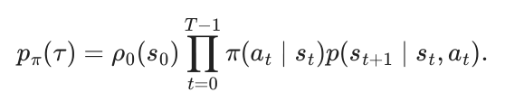
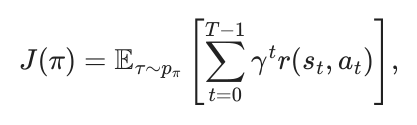
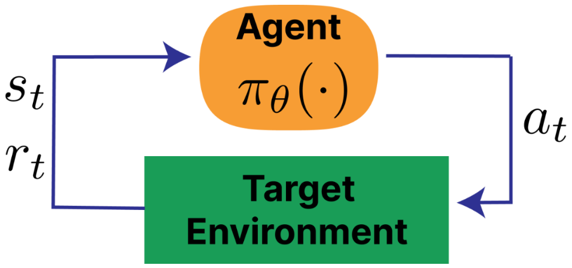
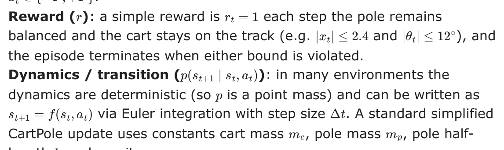
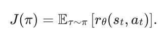
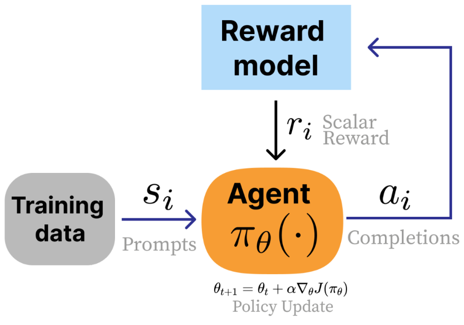
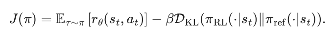
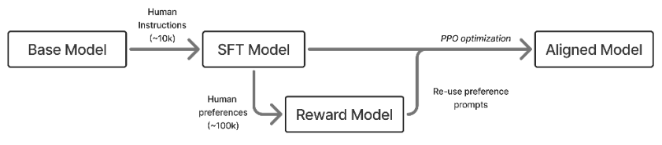
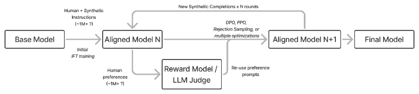
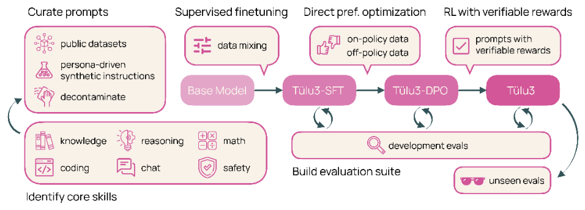

3Training Overview
- Reinforcement learning basics
- How RLHF relates to traditional RL
- An outline of the RLHF tools you’ll learn in this book
- RLHF training recipes of popular models like InstructGPT and DeepSeek R1
In this chapter we provide a cursory overview of RLHF training, before getting into the specifics later in the book. RLHF, while optimizing a simple loss function, involves training multiple, different AI models in sequence and then linking them together in a complex, online optimization.
Here, we introduce the core objective of RLHF, which is optimizing a proxy of reward of human preferences with a distance-based regularizer (along with showing how it relates to classical RL problems). Then we showcase canonical recipes which use RLHF to create leading models to show how RLHF fits in with the rest of post-training methods. These example recipes will serve as references for later in the book, where we describe different optimization choices you have when doing RLHF, and we will point back to how different key models used different steps in training.
#3.1 Problem Formulation
The optimization of reinforcement learning from human feedback (RLHF) builds on top of the standard RL setup. In RL, an agent takes actions at sampled from a policy π(at ∣st) given the state of the environment st to maximize reward r(st, at) [1]. Traditionally, the environment evolves according to transition (dynamics) p(st+1 ∣st, at) with an initial state distribution ρ0(s0). Together, the policy and dynamics induce a trajectory distribution:

Here, τ represents a trajectory—the complete sequence of states, actions, and rewards experienced by an agent: τ = (s0, a0, r0, s1, a1, r1, … , sT, aT, rT). The trajectory distribution is written as either pπ(τ) or p(τ ∣π), where ρ0(s0) is the prior state distribution and p(st+1 ∣st, at) is the transition probability.
Across a finite episode with horizon T, the goal of an RL agent is to solve the following optimization:

For continuing tasks, one often takes T →∞ and relies on discounting (γ < 1) to keep the objective well-defined. γ is a discount factor from 0 to 1 that balances the desirability of near- versus future-rewards. Multiple methods for optimizing this expression are discussed in Chapter 6.

A standard illustration of the RL loop is shown in fig. 3.1 and (compare this to the RLHF loop in fig. 3.2).
#3.1.1 Example RL Task: CartPole
To make the transition function concrete, consider the classic CartPole (inverted pendulum) control task.
State (st): the cart position/velocity and pole angle/angular velocity,

length l, and gravity g:
xt+1 = xt + Δtx˙t,x˙t+1 = x˙t + Δtx¨t,
θ= θ+ Δtθ˙,θ˙= θ˙+ Δtθ¨. t+1 t tt+1 t t
This is a concrete instance of the general setup above: the policy chooses at, the transition function advances the state, and the reward is accumulated over the episode.
#3.1.2 Manipulating the Standard RL Setup
The RL formulation for RLHF is seen as a less open-ended problem, where a few key pieces of RL are set to specific definitions in order to accommodate language models. There are multiple core changes from the standard RL setup to that of RLHF: Table tbl. 3.1 summarizes these differences between standard RL and the RLHF setup used for language models.
- Switching from a reward function to a reward model. In RLHF, a learned model of human preferences, rθ(st, at) (or any other classification model) is used instead of an environmental reward function. This gives the designer a substantial increase in the flexibility of the approach and control over the final results, but at the cost of implementation complexity. In standard RL, the reward is seen as a static piece of the environment that cannot be changed or manipulated by the person designing the learning agent.
- No state transitions exist. In RLHF, the initial states for the domain are prompts sampled from a training dataset and the “action” is the completion to said prompt. During standard practices, this action does not impact the next state and is only scored by the reward model.
- Response level rewards. Often referred to as a bandit problem, RLHF attribution of reward is done for an entire sequence of actions, composed of multiple generated tokens, rather than in a fine-grained manner.
| Aspect | Standard RL | RLHF (language models) |
|---|---|---|
| Reward signal | Environment reward function r(st, at) | Learned reward / preference model rθ(x, y) (prompt x, completion y) |
| State transition | Yes: dynamics p(st+1 ∣st, at) | Typically no: prompts x sampled from a dataset; the completion does not define the next prompt |
| Action | Single environment action at | A completion y (a sequence of tokens) sampled from πθ(⋅∣x) |
| Reward granularity | Often per-step / fine- grained | Usually response-level (bandit-style) over the full completion |
| Horizon | Multi-step episode ( T > 1) | Often single-step (T = 1), though multi-turn can be modeled as longer-horizon |
Given the single-turn nature of the problem, the optimization can be re-written without the time horizon and discount factor (and the reward models):

In many ways, the result is that while RLHF is heavily inspired by RL optimizers and problem formulations, the actual implementation is very distinct from traditional RL.

#3.1.3 Fine-tuning and Regularization
In traditional RL problems, the agent must learn from a randomly initialized policy, but with RLHF, we start from a strong pretrained base model with many initial capabilities. This strong prior for RLHF induces a need to control the optimization from drifting too far from the initial policy. In order to succeed in a fine-tuning regime, RLHF techniques employ multiple types of regularization to control the optimization. The goal is to allow the reward maximization to still occur without the model succumbing to over-optimization, as discussed in Chapter 16. The most common change to the optimization function is to add a distance penalty on the difference between the current RLHF policy and the starting point of the optimization, called the reference policy (πref):

Here, DKL denotes the Kullback-Leibler divergence, which measures how one probability distribution differs from another: DKL(P∥Q) = Ex∼P[log P(x) −log Q(x)]. In this context, it penalizes the RL policy for deviating too far from the reference.
Within this formulation, a lot of study into RLHF training goes into understanding how to spend a certain “KL budget” as measured by a distance from the initial model. For more details, see Chapter 15 on Regularization.
#3.1.4 Optimization Tools
In this book, we detail many popular techniques for solving this optimization problem. The popular tools of post-training include:
- Reward modeling (Chapter 5): Where a model is trained to capture the signal from collected preference data and can then output a scalar reward indicating the quality of future text.
- Instruction fine-tuning (Chapter 4): A prerequisite to RLHF where models are taught the question-answer format used in the majority of language modeling interactions today by imitating preselected examples.
- Rejection sampling (Chapter 9): The most basic RLHF technique where candidate completions for instruction fine-tuning are filtered by a reward model imitating human preferences.
- Policy gradients (Chapter 6): The reinforcement learning algorithms used in the seminal examples of RLHF to update parameters of a language model with respect to the signal from a reward model.
- Direct alignment algorithms (Chapter 8): Algorithms that directly optimize a policy from pairwise preference data, rather than learning an intermediate reward model to then optimize later.
Modern RLHF-trained models always utilize instruction fine-tuning followed by a mixture of the other optimization options.
#3.2 Canonical Training Recipes
Over time various models have been identified as canonical recipes for RLHF specifically or post-training generally. These recipes reflect data practices and model abilities at the time. As the recipes age, training models with the same characteristics becomes easier and takes fewer data. There is a general trend of post-training involving more optimization steps with more training algorithms across more diverse training datasets and evaluations.
#3.2.1 InstructGPT
Around the time ChatGPT first came out, the widely accepted (“canonical”) method for post-training an LM had three major steps, with RLHF being the central piece [2] [3] [4]. The three steps taken on top of a “base” language model (the next-token prediction model trained on large-scale web text) are summarized below in fig. 3.3:
- Instruction tuning on ~10K examples: This teaches the model to follow the question-answer format and teaches some basic skills from primarily human-written data.
- Training a reward model on ~100K pairwise prompts: This model is trained from the instruction-tuned checkpoint and captures the diverse values one wishes to model in their final training. The reward model is the optimization target for RLHF.
- Training the instruction-tuned model with RLHF on another ~100K prompts: The model is optimized against the reward model with a set of prompts that the model generates over before receiving ratings.
Once RLHF was done, the model was ready to be deployed to users. This recipe is the foundation of modern RLHF, but recipes have evolved substantially to include more stages and more data.

#3.2.2 Tülu 3
Modern versions of post-training involve many, many more model versions and training stages (i.e. well more than the 5 RLHF steps documented for Llama 2 [5]). An example is shown below in fig. 3.4 where the model undergoes numerous training iterations before convergence.

The most complex models trained in this era and onwards have not released full details of their training process. Leading models such as ChatGPT or Claude circa 2025 involve many, iterative rounds of training. This can even include techniques that train specialized models and then merge the weights together to get a final model capable on many subtasks [6] (e.g. Cohere’s Command A [7]).

A fully open example version of this multi-stage version of post-training where RLHF plays a major role is Tülu 3. The Tülu 3 recipe consists of three stages:
- Instruction tuning on ~1M examples: This primarily synthetic data from a mix of frontier models such as GPT-4o and Llama 3.1 405B teaches the model general instruction following and serves as the foundation of a variety of capabilities such as mathematics or coding.
- On-policy preference data on ~1M preference pairs: This stage substantially boosts the chattiness (e.g. ChatBotArena or AlpacaEval 2) of the model while also improving skills mentioned above in the instruction tuning stage.
- Reinforcement Learning with Verifiable Rewards on ~10K prompts: This stage is a small-scale reinforcement learning run to boost core skills such as mathematics while maintaining overall performance (and is now seen as a precursor to modern reasoning models such as DeepSeek R1).
The recipe has been successfully applied to Llama 3.1 [8], OLMo 2 [9], and SmolLM models [10].
#3.2.3 DeepSeek R1
With the rise of reasoning language models, such as OpenAI’s o1, the best practices in post-training evolved again to re-order and redistribute compute across training stages. The clearest documentation of a reasoning model post-training recipe is DeepSeek R1 [11], which has been mirrored by Alibaba’s larger Qwen 3 models (i.e. only the 32B and 225B MoE models) [12] or Xiaomi’s MiMo 7B [13]. The DeepSeek recipe follows:
- “Cold-start” of 100K+ on-policy reasoning samples: This data is sampled from an earlier RL checkpoint, R1-Zero, and heavily filtered to instill a specific reasoning process on the model. DeepSeek uses the term cold-start to describe how RL is learned from little supervised data.
- Large-scale reinforcement learning training: This stage repeatedly covers reasoning problems with the model, running RLVR “until convergence” on a variety of benchmarks.
- Rejection sampling on 3/4 reasoning problems and 1/4 general queries to start the transition to a general-purpose model.
- Mixed reinforcement learning training on reasoning problems (verifiable rewards) with general preference tuning reward models to polish the model.
As above, there are evolutions of the recipe, particularly with steps 3 and 4 to finalize the model before exposing it to users. Many models start with tailored instruction datasets with chain-of-thought sequences that are heavily filtered and polished from existing models, providing a fast step to strong behaviors with SFT alone before moving onto RL [14].
[1]R. S. Sutton, “Reinforcement learning: An introduction,” A Bradford Book, 2018.
[2]N. Lambert, L. Castricato, L. von Werra, and A. Havrilla, “Illustrating reinforcement learning from human feedback (RLHF),” Hugging Face Blog, 2022.
[3]L. Ouyang et al., “Training language models to follow instructions with human
feedback,” Advances in neural information processing systems, vol. 35, pp. 27730– 27744, 2022.
[4]Y. Bai et al., “Training a helpful and harmless assistant with reinforcement learning from human feedback,” arXiv preprint arXiv:2204.05862, 2022.
[5]H. Touvron et al., “Llama 2: Open foundation and fine-tuned chat models,” arXiv
preprint arXiv:2307.09288, 2023.
[6]M. Li et al., “Branch-train-merge: Embarrassingly parallel training of expert
language models,” arXiv preprint arXiv:2208.03306, 2022.
[7]T. Cohere et al., “Command a: An enterprise-ready large language model,” arXiv
preprint arXiv:2504.00698, 2025.
[8]N. Lambert et al., “Tulu 3: Pushing frontiers in open language model post-training,” arXiv preprint arXiv:2411.15124, 2024.
[9]T. OLMo et al., “2 OLMo 2 furious,” arXiv preprint arXiv:2501.00656, 2024.
[10]S. Alrashed, “SmolTulu: Higher learning rate to batch size ratios can lead to better reasoning in SLMs,” arXiv preprint arXiv:2412.08347, 2024.
[11]D. Guo et al., “Deepseek-r1: Incentivizing reasoning capability in llms via
reinforcement learning,” arXiv preprint arXiv:2501.12948, 2025.
[12]A. Yang et al., “Qwen3 technical report,” arXiv preprint arXiv:2505.09388, 2025.
[13]B. Xia et al., “MiMo: Unlocking the reasoning potential of language model–from
pretraining to posttraining,” arXiv preprint arXiv:2505.07608, 2025.
[14]B. Seed et al., “Seed-thinking-v1. 5: Advancing superb reasoning models with
reinforcement learning,” arXiv preprint arXiv:2504.13914, 2025.